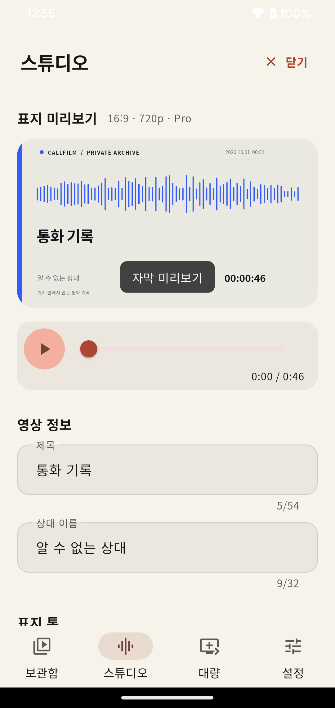
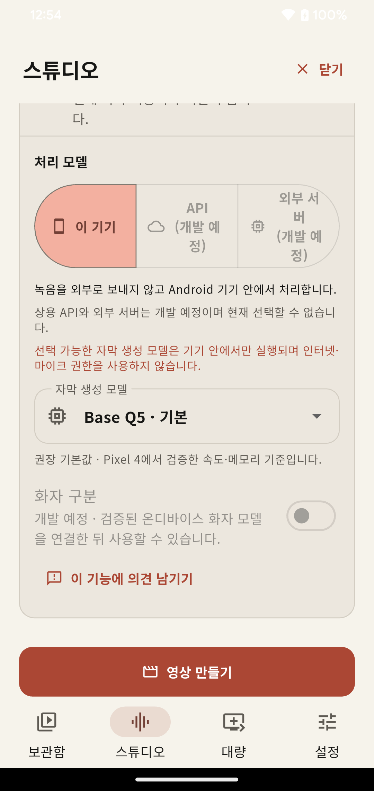
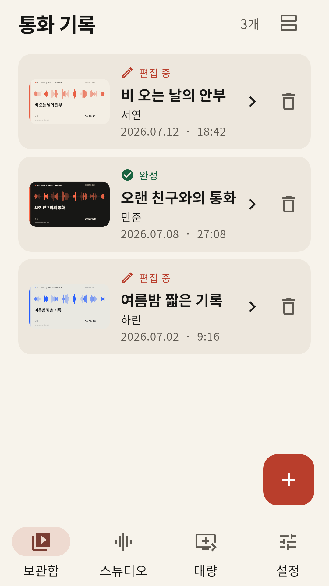
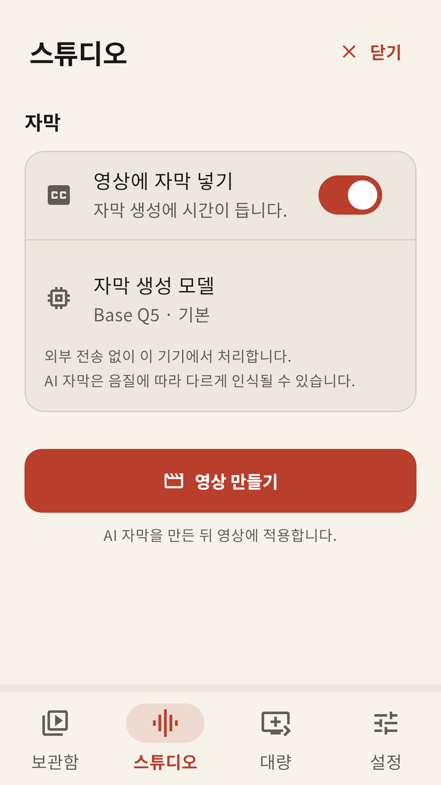
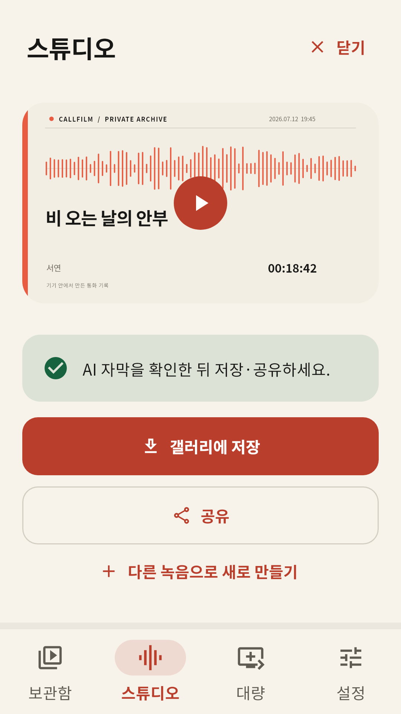

표지와 결합
제목, 상대 이름, 녹음 시각과 파형을 한 장의 정적인 표지로 정리합니다.
통화 녹음을 기기 내 음성 인식 AI가 듣고, 시간에 맞춘 자막으로 만듭니다. 자막 생성부터 MP4 입히기·갤러리 저장까지 기기 안에서 끝납니다.
Android 마켓 등록과 최종 배포 검증이 끝나면 공식 설치 링크를 제공합니다. APK 직접 다운로드는 제공하지 않습니다.
v1.0.0 BUILD 1 Android 7.0 이상


음성 인식 기기 내 AI Base Q5 · 외부 전송 없음
자막 적용 MP4에 직접 시간에 맞춰 영상 픽셀로
실기기 검증 Pixel 4 자막 생성·렌더 완료
배포 출시 예정 Android 마켓
포함된 음성 인식 AI가 통화 오디오를 기기 안에서 처리합니다. 인식한 문장을 재생 시간에 맞추고, 재생기와 관계없이 보이도록 자막을 MP4 영상에 직접 입힙니다.
기본 Base Q5 모델이 녹음을 외부로 보내지 않고 Android 기기 안에서 자막 문장과 시간을 만듭니다.
생성된 자막을 미리 확인하고, H.264·AAC 영상의 픽셀에 함께 렌더해 갤러리 저장과 공유까지 이어갑니다.
제목, 상대 이름, 녹음 시각과 파형을 한 장의 정적인 표지로 정리합니다.
포함된 Base Q5 음성 인식 AI로 오디오를 기기 안에서 처리해 영상에 자막을 직접 입힙니다.
최대 20개의 녹음을 고르고 보상형 광고의 보상을 받은 뒤, 한 파일씩 안전하게 자막과 영상을 만듭니다.
완성한 MP4를 확인한 뒤, 사용자가 직접 선택한 순간에만 갤러리에 저장합니다.
원본 복사본, 편집 정보와 완성 영상은 다른 일반 앱이 읽기 어려운 앱 공간에 둡니다.
개발자 계정·클라우드 업로드 없이 처리합니다. 광고는 대량 만들기에서만 직접 선택합니다.
보관함, 단건 편집, 렌더 진행과 완성 영상 확인을 같은 흐름 안에서 짧게 정리했습니다.



Android 파일 선택기에서 정당하게 보유한 녹음을 고릅니다.
제목과 상대 이름을 정리하고 표지를 미리 봅니다.
AI 자동 자막을 켜고 기기 내 모델을 선택한 뒤, 자막이 입혀진 MP4를 만듭니다.
완성 영상을 확인하고 갤러리 저장이나 공유를 직접 선택합니다.
영상 만들기는 포그라운드에서 진행됩니다. 렌더 중에는 앱 화면을 유지하세요.
64비트 Android 7.0 이상을 대상으로 하며, 기기 인코더 지원에 따라 결과가 달라질 수 있습니다.
통화 녹음과 공유에 필요한 동의와 법률은 지역마다 다릅니다. 정당하게 보유한 녹음만 사용하세요.
ANDROID 마켓 출시 예정
BUILD 1의 AI 자막·렌더 실기기 검증과 Google Play 등록을 준비하고 있습니다. 배포가 시작되면 이 페이지의 예정 상태를 공식 설치 링크로 교체합니다.